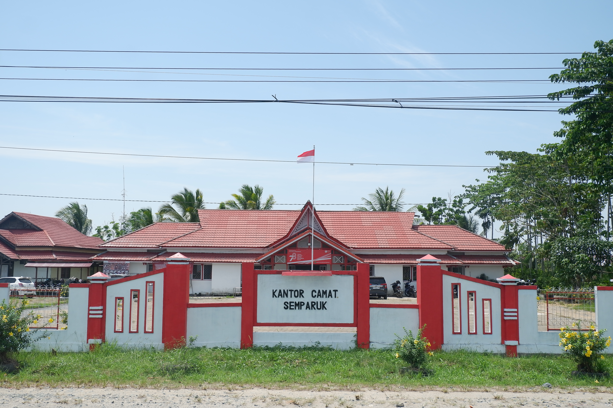

Profil Desa Semparuk
Mengenal lebih dekat sejarah, letak geografis, visi misi, dan aparatur Desa Semparuk.
Mengenal lebih dekat sejarah, letak geografis, visi misi, dan aparatur Desa Semparuk.

Desa Semparuk merupakan salah satu desa yang berada di Kecamatan Semparuk, Kabupaten Sambas, Provinsi Kalimantan Barat.
Masyarakat Desa Semparuk sejak dahulu dikenal sebagai masyarakat agraris dengan mata pencaharian utama di bidang persawahan. Kehidupan masyarakat berkembang berdampingan dengan parit dan sungai yang menjadi bagian penting dari lingkungan desa.
Mewujudkan Desa Semparuk yang maju, mandiri, sejahtera, serta berlandaskan nilai gotong royong dan pembangunan berkelanjutan.
Kalimantan Barat
Sambas
Semparuk
Persawahan
Data dapat diperbarui sesuai perangkat desa terbaru.